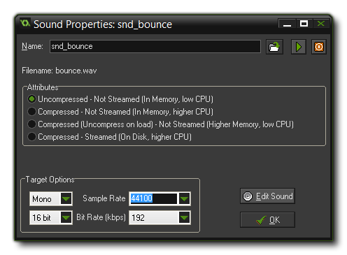

Tutorial
Page 4 of 15
Adding Sounds
Now that we have created the sprites, we will need to create two sound effects as well. We want one to play when the clown hits a wall and the other to play when the clown is successfully "caught" with the
mouse by the player. We will use two wave (*.wav) format files for this as wave files are excellent for short sound effects.
To create two sound resources:
- From the Resources menu, choose Create Sound. The Sound Properties form appears, and you should click on the Name field and rename it to "snd_bounce".
- Click on the Load Sound button, navigate to the Catch The Clown Assets folder that came with the tutorial, and select the sound file bounce.wav. The form should now
look like this:

- Click the "OK" button to close the form.
- Create another sound resource and name it "snd_click".
- Click the Load Sound button and select the sound file click.wav.
- Close the form.
Within the sound properties form you can use the play button, with the green triangle pointing to the right, to listen to the sound which is repeated constantly unless you press the red stop button. There are also a
few other options relating to sound quality, but for now we can ignore these as the default values are fine for most games. Notice again that the two sounds are shown in the resource tree on the left of the
main GameMaker window.
© Copyright YoYo Games Ltd. 2015 All Rights Reserved